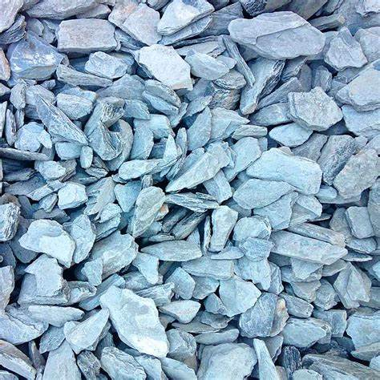
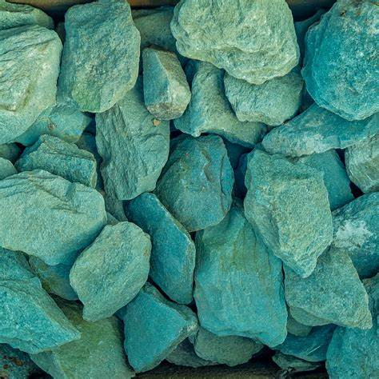
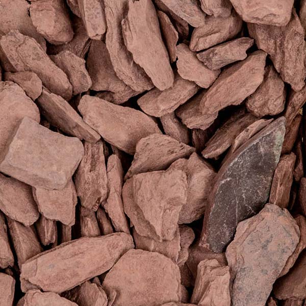
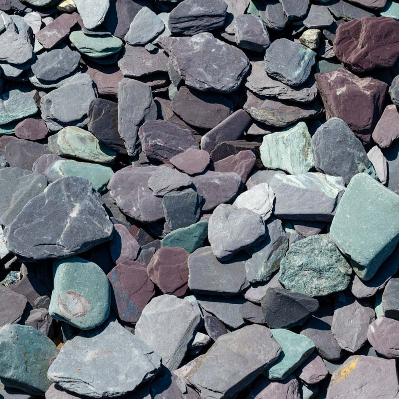
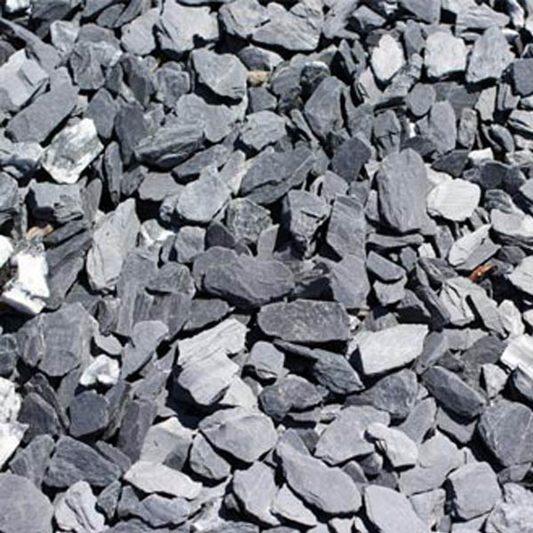

Slate: The Fine-Grained Metamorphic Rock

Chemical Formula: Primarily composed of minerals like quartz, muscovite, and chlorite
Color: Various (Grey, Black, Green, Purple, Red)
Hardness: 3-5.5 on the Mohs scale
Crystal System: Foliated metamorphic rock
Localities: Wales, United States, Spain, India, and China
Common Uses: Roofing tiles, flooring, countertops, chalkboards, and pool tables
Introduction to Slate
Slate is a fine-grained foliated metamorphic rock formed from the low-grade metamorphism of shale, clay, or volcanic ash. Known for its characteristic ability to break into thin flat sheets, slate has been used for centuries in construction, particularly for roofing and flooring. Its durability, weather resistance, and aesthetic appeal make it a sought-after material in various industries.
Slate's formation process imbues it with a distinct layered structure or foliation, which allows it to split easily along parallel planes. This property has made slate popular in architectural and decorative applications, as well as in everyday objects like chalkboards and pool tables.
Formation and Types of Slate
Slate forms through a process of low-grade metamorphism, typically from sedimentary rocks like shale. Over time, heat and pressure alter these rocks, causing the alignment of their mineral grains in a process called foliation. This results in the distinctive layered appearance of slate.
Key Types of Slate:
1. Blue Slate
Found primarily in Wales, blue slate is one of the highest-quality varieties known for its deep blue-grey color and durability in roofing.
2. Green Slate
Composed of minerals like chlorite, green slate is found in regions like Vermont (USA) and parts of Brazil. It is prized for its unique coloration and is often used in decorative flooring.
3. Red Slate
Rich in iron oxide, red slate has a distinctive reddish hue and is commonly used for flooring, cladding, and roofing.
4. Purple Slate
This variety, found in areas like Spain and the UK, contains iron and manganese, giving it a purple tint. It is often used for decorative purposes.
5. Black Slate
Black slate is common worldwide and is often used in architectural applications due to its classic appearance and durability.
Structure and Properties of Slate
Slate’s fine-grained texture and foliated structure give it unique properties, particularly its ability to split into thin, smooth sheets. The alignment of minerals during metamorphism creates layers that can be easily separated, making slate highly suitable for roofing and other flat surfaces.
- Foliation: The parallel layering or foliation in slate results from the alignment of platy minerals during metamorphism, which allows it to split easily into thin sheets.
- Hardness: Slate has a hardness of 3 to 5.5 on the Mohs scale, making it relatively soft compared to igneous rocks but durable enough for architectural uses.
- Color: Slate's color varies widely depending on its mineral content, with common shades including grey, black, green, purple, and red.
- Durability: Slate is highly resistant to weathering, making it ideal for outdoor applications such as roofing, paving, and cladding.
Uses of Slate
Slate’s versatility and aesthetic appeal make it a popular material across several industries, particularly in construction and design.
1. Roofing Material
Slate is best known for its use as roofing material, especially in regions with long-standing traditions of slate quarrying. Its ability to resist water, fire, and weathering makes it an excellent choice for roofing tiles that can last over a century.
Famous Slate Roofs:
- St. David’s Cathedral in Wales is roofed with Welsh blue slate, known for its durability and aesthetic appeal.
- Many historical buildings across Europe and the United States feature slate roofing, valued for its longevity and traditional look.
2. Flooring and Paving
Slate is also commonly used in flooring and paving. Its durability, slip resistance, and range of colors make it a popular choice for both indoor and outdoor settings.
Decorative Uses:
Slate is often used in high-end architectural designs for patios, walkways, and courtyards. Its non-slip surface also makes it a practical choice for areas prone to wet conditions, such as pool surrounds or bathroom floors.
3. Countertops and Surfaces
Slate’s natural beauty and resistance to heat and chemicals make it an ideal material for countertops and kitchen surfaces.
Kitchen Countertops:
Slate countertops offer a unique alternative to materials like granite or marble, combining aesthetic appeal with heat and stain resistance.
4. Chalkboards and Writing Surfaces
Before the widespread use of whiteboards, slate was the material of choice for chalkboards due to its smooth surface, which provides excellent contrast for chalk.
Pool Tables:
Slate is also the preferred material for the playing surfaces of pool tables due to its flatness and stability, ensuring an even playing surface.
Unusual Varieties of Slate
Slate comes in many varieties, some of which exhibit unique characteristics or colors due to variations in mineral content and formation processes.
- Honed Slate: A highly polished form of slate, honed slate is used in interior design applications such as flooring and countertops, where a smooth, elegant finish is desired.
- Rustic Slate: This variety retains more of its natural texture, making it popular in rustic or outdoor designs. It has a rough, uneven surface that adds character to architectural projects.
- Multicolored Slate: Found in regions like India, multicolored slate features a blend of hues, including reds, purples, and greens. It is often used decoratively in tiling and cladding.
Sourcing Locations of Slate
Slate is quarried around the world, with certain regions known for producing particularly high-quality varieties.
- Wales (United Kingdom): Wales has a long history of slate production, particularly from regions like Snowdonia, which is famous for its blue slate.
- Spain: Spain is the world's largest producer of roofing slate, with quarries in Galicia and other northern regions supplying high-quality material for construction.
- United States: Vermont and Pennsylvania are key producers of slate in the U.S., with Vermont green slate being particularly valued for decorative purposes.
- India: India is a major exporter of multicolored slate, which is used in construction and decorative projects worldwide.
- China: China produces a significant amount of slate, particularly in the southern provinces, where it is used for both domestic and international projects.
Exploration and Mining of Slate
Slate mining is a well-established industry in regions with abundant geological resources. The extraction process involves locating quality deposits and carefully removing the slate to preserve its integrity.
Exploration
Geologists survey potential quarry sites, often using techniques like core drilling and ground surveys to assess the quality of slate deposits.
Mining Methods
Slate is typically extracted from quarries through a combination of blasting and cutting. The stone is removed in large blocks and then split into thinner slabs for use in construction or manufacturing.
Splitting Process
Slate's natural foliation allows it to be split by hand or with mechanical tools into thin sheets, which are then further processed into roofing tiles, flooring, or other products.
Processing
Once extracted, slate is cut, trimmed, and often honed or polished depending on its intended use. In some cases, the stone is split into uniform thicknesses for roofing or countertops, while rougher finishes are left for paving or rustic decorative applications.
Metaphysical Properties of Slate
Slate is not only valued for its practical uses but also has symbolic and metaphysical significance in certain cultures and spiritual practices.
- Focus and Organization: Slate is believed to aid in mental clarity and focus, helping individuals organize their thoughts and achieve their goals.
- Grounding and Stability: As a metamorphic rock, slate is associated with grounding energy, providing stability and balance, particularly in stressful situations.
- Transformation: Since slate forms through the metamorphic process, it is often linked to themes of personal transformation and growth, helping individuals navigate change.
Famous Finds and Slate
Slate has been used in some of the most iconic buildings and landmarks throughout history.
- St. Fagans Castle (Wales): The historic St. Fagans Castle is an example of traditional Welsh slate roofing, demonstrating the longevity and aesthetic appeal of blue slate.
- Buckingham Palace (United Kingdom): The roofing of Buckingham Palace includes Welsh slate, contributing to its stately appearance.
- Harvard University (USA): Several buildings on the Harvard University campus feature slate roofing and walkways, reflecting the material's enduring popularity in prestigious architecture.
Caring for Slate
While durable, slate requires some care to ensure it maintains its beauty and functionality, particularly in high-traffic or outdoor applications.
- Cleaning: Slate should be cleaned regularly with a mild detergent and soft brush. Avoid acidic cleaners, as they can etch the surface of the stone.
- Sealing: In high-moisture environments, such as bathrooms or outdoor patios, sealing slate can help protect it from water damage and staining.
- Repairs: Over time, slate roofs may require maintenance as individual tiles can crack or loosen. Regular inspection and prompt repair will extend the life of slate roofing.
Conclusion
Slate is a unique metamorphic rock that has found widespread use in construction, design, and even spiritual practices. Its natural beauty, durability, and versatility have made it a staple material in roofing, flooring, and decorative applications for centuries. Whether as a traditional roofing tile, a kitchen countertop, or an artistic medium, slate continues to be highly valued for its aesthetic and practical qualities.